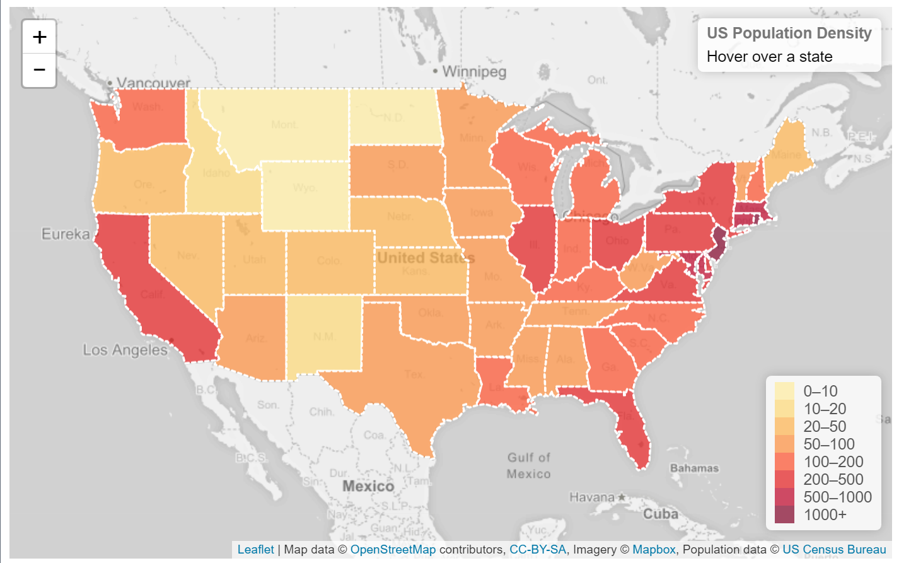
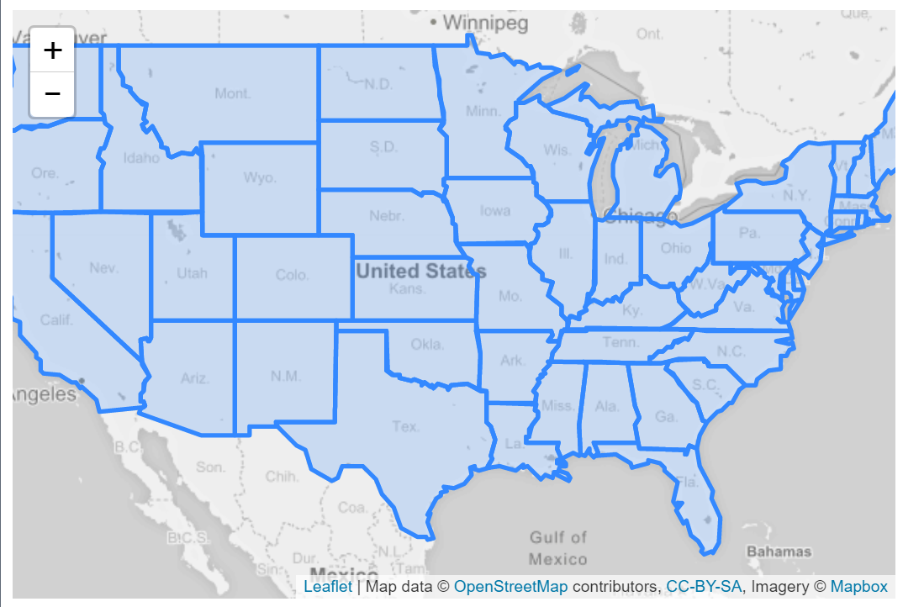
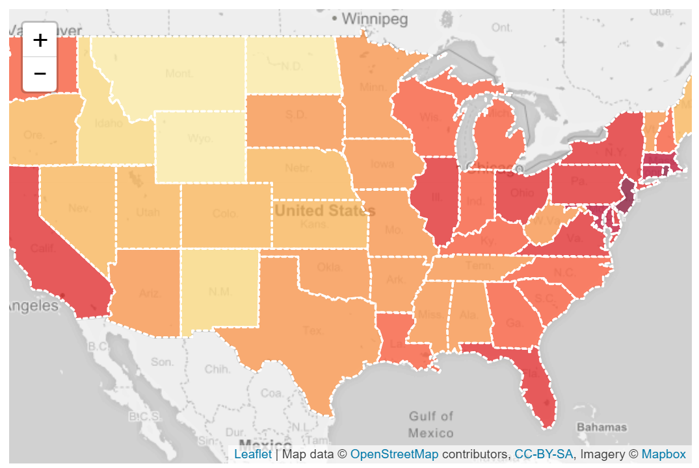

Winter 2017 | Geography 371 | Geovisualization: Web Mapping
Instructor: Bo Zhao | TA: Andy Wilson | Location: 235 Wilkinson | Time: Friday 2-2:50pm
Learning Objectives
This lecture creates a colorful interactive choropleth map of US States Population Density with the help of GeoJSON and some custom controls.

Note: A choropleth map is a thematic map in which areas are shaded or patterned in proportion to the measurement of the statistical variable being displayed on the map, such as population density or per-capita income. The choropleth map provides an easy way to visualize how a measurement varies across a geographic area or it shows the level of variability within a region.
We’ll be creating a visualization of population density per US state. As the amount of data (state shapes and the density value for each state) is not very big, the most convenient and simple way to store and then display it is GeoJSON.
Each feature of our GeoJSON data (us-states.js) will look like this:
xxxxxxxxxx91{2 "type": "Feature",3 "properties": {4 "name": "Oregon",5 "density": 40.336 },7 "geometry": 8 9}The GeoJSON with state shapes is from Mike Bostock of D3, extended with density values from US Census Bureau (2011) and assigned to states data JS variable.
Let’s display our states data on a map with a custom Mapbox style for nice grayscale tiles that look perfect as a background for visualizations:
x
1var mapboxAccessToken = {your access token here};2var map = L.map('map').setView([37.8, -96], 4);34L.tileLayer('https://api.tiles.mapbox.com/v4/{id}/{z}/{x}/{y}.png?access_token=' + mapboxAccessToken, {5 id: 'mapbox.light',6 attribution: 7}).addTo(map);89L.geoJson(statesData).addTo(map);
Now we need to color the states according to their population density. Regarding using color on web environment, please refer to a tutorial on color at W3Schools. the Choosing nice colors for a map can be tricky, but there’s a great tool that can help with it — ColorBrewer. Using the values we got from it, we create a function that returns a color based on population density:
xxxxxxxxxx101function getColor(d) {2 return d > 1000 ? '#800026' :3 d > 500 ? '#BD0026' :4 d > 200 ? '#E31A1C' :5 d > 100 ? '#FC4E2A' :6 d > 50 ? '#FD8D3C' :7 d > 20 ? '#FEB24C' :8 d > 10 ? '#FED976' :9 '#FFEDA0';10}Next we define a styling function for our GeoJSON layer so that its fillColor depends onfeature.properties.density property, also adjusting the appearance a bit and adding a nice touch with dashed stroke.
1function style(feature) {2 return {3 fillColor: getColor(feature.properties.density),4 weight: 2,5 opacity: 1,6 color: 'white',7 dashArray: '3',8 fillOpacity: 0.79 };10}1112L.geoJson(statesData, {style: style}).addTo(map);Looks much better now!

Now let’s make the states highlighted visually in some way when they are hovered with a mouse. First we’ll define an event listener for layer mouseover event:
1function highlightFeature(e) {2 var layer = e.target;34 layer.setStyle({5 weight: 5,6 color: '#666',7 dashArray: '',8 fillOpacity: 0.79 });1011 if (!L.Browser.ie && !L.Browser.opera && !L.Browser.edge) {12 layer.bringToFront();13 }14}Here we get access to the layer that was hovered through e.target, set a thick grey border on the layer as our highlight effect, also bringing it to the front so that the border doesn't clash with nearby states (but not for IE, Opera or Edge, since they have problems doing bringToFront on mouseover).
Next we’ll define what happens on mouseout:
1function resetHighlight(e) {2 geojson.resetStyle(e.target);3}The handy geojson.resetStyle method will reset the layer style to its default state (defined by our style function). For this to work, make sure our GeoJSON layer is accessible through the geojson variable by defining it before our listeners and assigning the layer to it later:
1var geojson;2// ... our listeners3geojson = L.geoJson();As an additional touch, let’s define a click listener that zooms to the state:
xxxxxxxxxx31function zoomToFeature(e) {2 map.fitBounds(e.target.getBounds());3}Now we’ll use the onEachFeature option to add the listeners on our state layers:
xxxxxxxxxx121function onEachFeature(feature, layer) {2 layer.on({3 mouseover: highlightFeature,4 mouseout: resetHighlight,5 click: zoomToFeature6 });7}89geojson = L.geoJson(statesData, {10 style: style,11 onEachFeature: onEachFeature12}).addTo(map);This makes the states highlight nicely on hover and gives us the ability to add other interactions inside our listeners.
We could use the usual popups on click to show information about different states, but we’ll choose a different route — showing it on state hover inside a custom control.
Here’s the code for our control:
xxxxxxxxxx161var info = L.control();23info.onAdd = function (map) {4 this._div = L.DomUtil.create('div', 'info'); // create a div with a class "info"5 this.update();6 return this._div;7};89// method that we will use to update the control based on feature properties passed10info.update = function (props) {11 this._div.innerHTML = '<h4>US Population Density</h4>' + (props ?12 '<b>' + props.name + '</b><br />' + props.density + ' people / mi<sup>2</sup>'13 : 'Hover over a state');14};1516info.addTo(map);We need to update the control when the user hovers over a state, so we’ll also modify our listeners as follows:
1function highlightFeature(e) {2 3 info.update(layer.feature.properties);4}56function resetHighlight(e) {7 8 info.update();9}The control also needs some CSS styles to look nice:
1.info {2 padding: 6px 8px;3 font: 14px/16px Arial, Helvetica, sans-serif;4 background: white;5 background: rgba(255,255,255,0.8);6 box-shadow: 0 0 15px rgba(0,0,0,0.2);7 border-radius: 5px;8}9.info h4 {10 margin: 0 0 5px;11 color: #777;12}Creating a control with a legend is easier, since it is static and doesn’t change on state hover. JavaScript code:
xxxxxxxxxx191var legend = L.control({position: 'bottomright'});23legend.onAdd = function (map) {45 var div = L.DomUtil.create('div', 'info legend'),6 grades = [0, 10, 20, 50, 100, 200, 500, 1000],7 labels = [];89 // loop through our density intervals and generate a label with a colored square for each interval10 for (var i = 0; i < grades.length; i++) {11 div.innerHTML +=12 '<i style="background:' + getColor(grades[i] + 1) + '"></i> ' +13 grades[i] + (grades[i + 1] ? '–' + grades[i + 1] + '<br>' : '+');14 }1516 return div;17};1819legend.addTo(map);CSS styles for the control (we also reuse the info class defined earlier):
xxxxxxxxxx111.legend {2 line-height: 18px;3 color: #555;4}5.legend i {6 width: 18px;7 height: 18px;8 float: left;9 margin-right: 8px;10 opacity: 0.7;11}[1] Choropleth map https://en.wikipedia.org/wiki/Choropleth_map
[2] Color for styling thematic layers http://colorbrewer2.org/